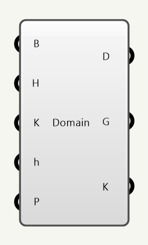

REFERENCE
Component Guide
33 components, 346 ports, rendered component images, exact defaults and verified wiring examples.
Find a component →ONE MANUAL / ONE LEARNING PATH
An English guide to modelling, FEM and topology optimisation in Rhino and Grasshopper.
Use the lessons to learn in sequence and the component guide to understand each input, output and connection.

REFERENCE
33 components, 346 ports, rendered component images, exact defaults and verified wiring examples.
Find a component →PRACTICE
A progressive course: questions, actions, expected observations and checkpoints. Each lesson keeps its slides and files together.
Follow the learning path →PREPARATION
Software preparation, Windows and Mac status, classroom checks and how to use this manual offline.
Prepare your computer →All eight lessons are available: from the first prediction to a three-stage calculation, the roof-rib transfer exercise and an evidence-based conclusion. Teaching and exercises total 170 minutes, plus a 10-minute break.
Lesson 01 — Understand the problem is ready: seven slides, teacher notes, a prediction sheet and the native Rhino/Grasshopper starter files.
Open the complete lesson page →
Lesson 02 — Build the domain is ready: interactive grid, seven slides, teacher guide, student worksheet and Grasshopper starter/solution.
The authors acknowledge support from the ARCHIBIOFOAM project, which received funding from the European Union’s Horizon Europe research and innovation programme under grant agreement No 101161052.
Views and opinions expressed are however those of the author(s) only and do not necessarily reflect those of the European Union or European Innovation Council and SMEs Executive Agency (EISMEA). Neither the European Union nor the granting authority can be held responsible for them.